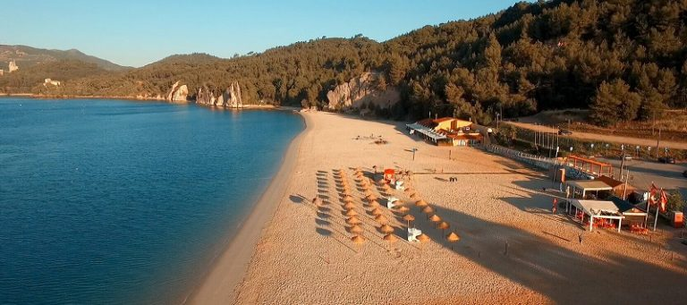

próxima viagem:

Essa bela imagem é do alto de Setúbal do alto da Arrábida que mostra que é uma bela cidade à 40 minutos de lisboa.
Praia de Galapos
A praia da Figueirinha tem um belíssimo areal! É bastante procurada e frequentado no pico do Verão. Se a praia estiver cheia, procure encontrar algum espaço nas pontas do areal. A paisagem envolvente é de grande beleza. As rochas e os seus reflexos nas águas cristalinas são um extra. Como sempre nesta zona, prepare-se para uns mergulhos magníficos e… gélidos!
Uma praia magnífica com uma autêntica piscina natural de água cristalina, sem ondas e… fria. Tem diversos apoios de praia que dão muito jeito: casas de banho públicas, um restaurante com diversas opções gastronómicas e a possibilidade de alugar um chapéu de praia. É um areal bastante tranquilo até porque os carros não podem circular junto à praia. 